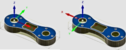

<table valign=middle><tr><td height=24 width=24></td><td><div id="wcs_orientation_flipX"><h3 id="wcs_orientation_flipX">Разворот оси X РСК</h3>
</td></tr></table>
<p>Поворот оси X на 180 градусов.</p>
<br><center>
<center><table valign=top class="tipTable">
<tr>
<td><center></center></td>
</tr><tr>
<td><center><p><b>Поворот направления оси на 180 градусов</b></p></center></td>
</tr></table><left>
</div>